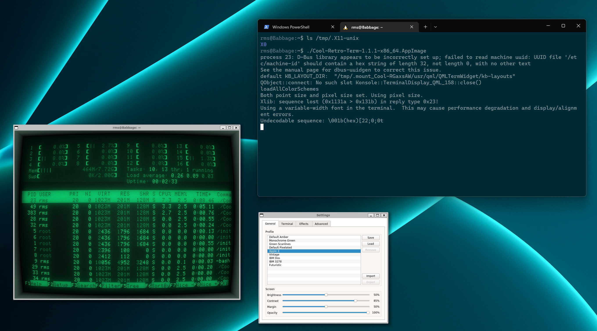
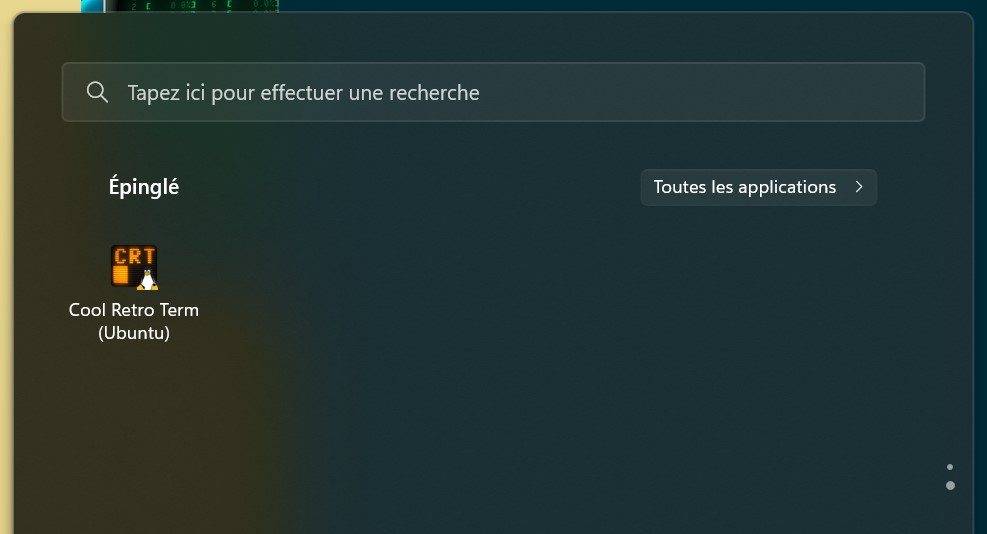

The original cool-retro-term on WSL blogpost is still one of the most-viewed ones on this website for some reason, but it's gotten quite a bit out of date now that WSL ships with a built-in X server. well achctually it's not X, wslg uses wayland with Xwayland etc etc whatever
WSLg + WSL2 was limited to Windows 11 for quite a while, but that very recently changed, so I feel it's a nice time to re-try the whole cool-retro-term in Windows experience. Let's get rolling!
Install WSL2 and the required dependencies
WSL is much easier to install these days, you can just run:
wsl.exe --install
to get WSL2, an Ubuntu default distro and the WSLg system distro.
Download the cool-retro-term AppImage and run it
cool-retro-term doesn't seem to have an AppImage up for their recent 1.2.0 due to CI issues, so I'll just keep using the ol' reliable 1.1.1 for this.
WSL2 supports AppImages much better than WSL1 used to do, so you just have to run the following:
wget https://github.com/Swordfish90/cool-retro-term/releases/download/1.1.1/Cool-Retro-Term-1.1.1-x86_64.AppImage
chmod a+x Cool-Retro-Term-1.1.1-x86_64.AppImage
./Cool-Retro-Term-1.1.1-x86_64.AppImage
And that's it, you're done!

Similarly, the .bat shortcut to start CRT becomes much, much shorter:
cool-retro-term.bat
start /min wsl -d ubuntu [folder where you saved the appimage]/Cool-Retro-Term-1.1.1-x86_64.AppImage
Potential issues and troubleshooting
If you get an error like QXcbConnection: Could not connect to display, it's likely the WSLg Wayland compositor is acting up for some reason.
I recommend first trying a full restart of the WSL VM using wsl.exe --shutdown in a PowerShell window.
If that doesn't help, you might have some luck following the instructions here.
WSL2+WSLg fixes essentially all the caveats from the previous article, so you now have GPU acceleration, working copy-paste, all the bells and whistles. 🎊
My only gripe with WSLg is that it tries its best to apply Windows DPI settings but doesn't always succeed, so if you're running at high DPI, you might have to tweak the CRT settings a bit to have it look nice for you.
Using apt instead of the AppImage
I personally think the AppImage is the fastest way to setup CRT and have it up to date, but since the WSL2 default user distro is Ubuntu, you can easily just do apt update && apt install cool-retro-term.
This approach has the advantage of bundling a .desktop file, so you can start CRT directly from the Windows Start Menu:
